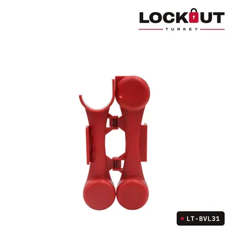
26 ürün
Vana Kilitleme Ekipmanları
Buhar, su, gaz ve kimyasal hatlarında bakım öncesi vana kapatılıp kilitlenir. Doğru vana kilidi, vananın tipine ve kol ya da volan ölçüsüne göre seçilir.
Vana Kilitleme Ekipmanları ürünleri
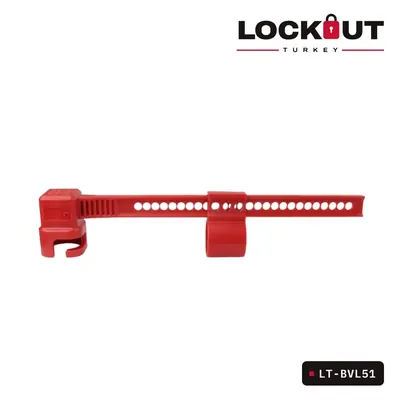
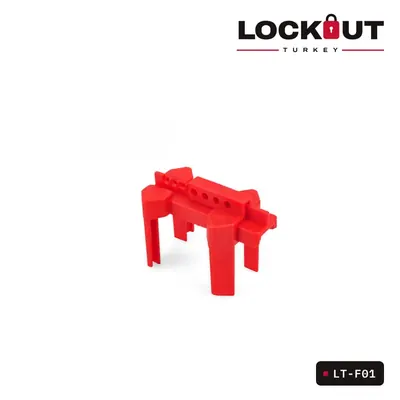
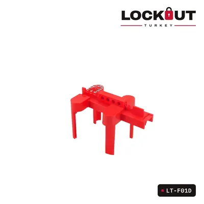
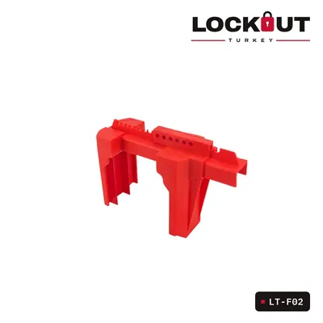
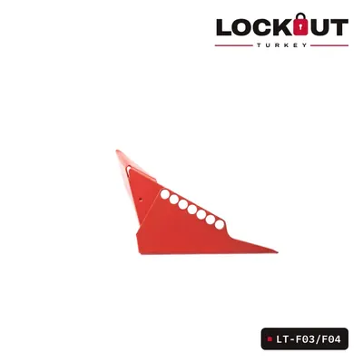
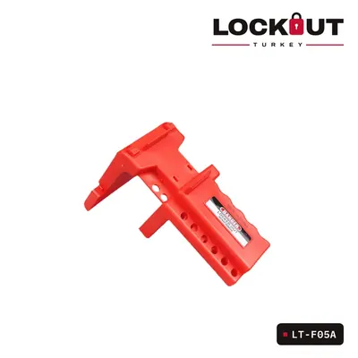
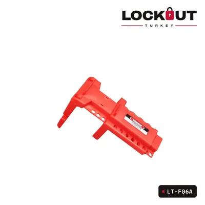
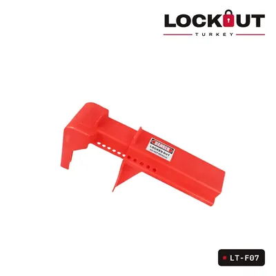
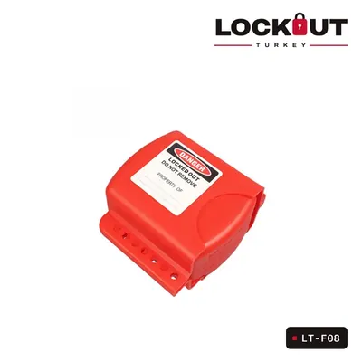
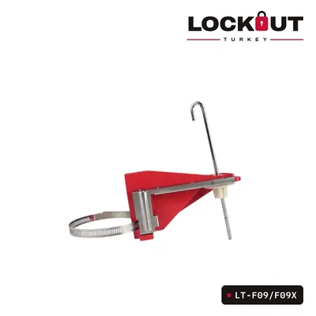
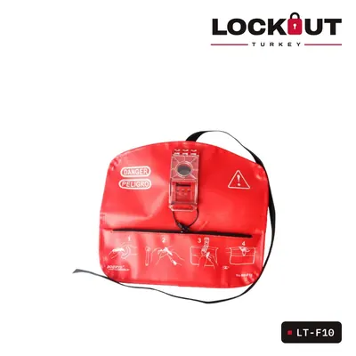
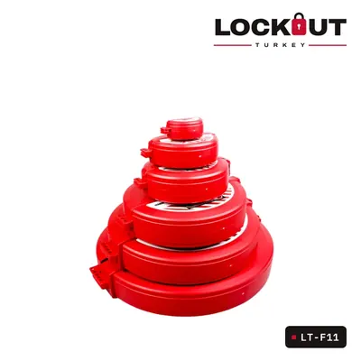
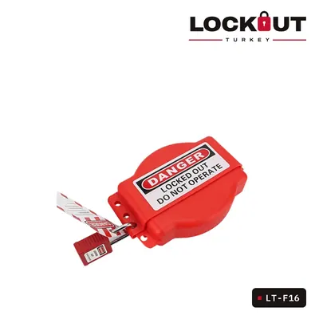
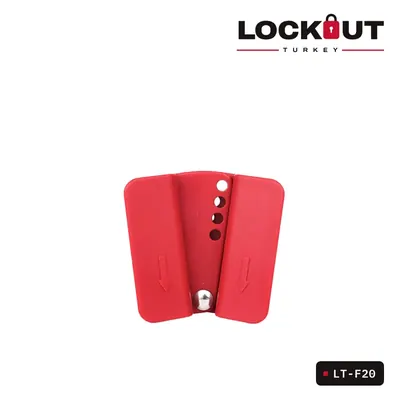
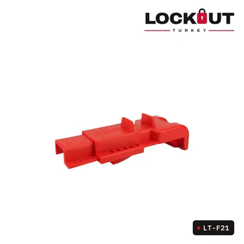
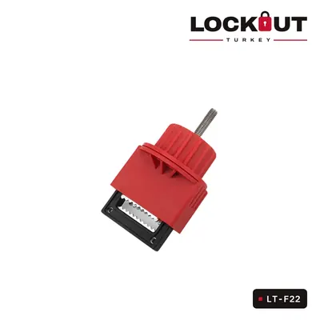
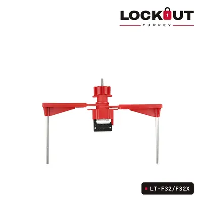
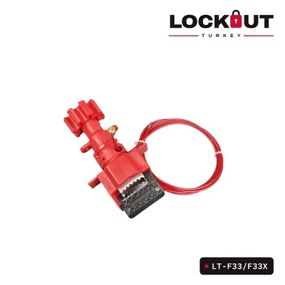
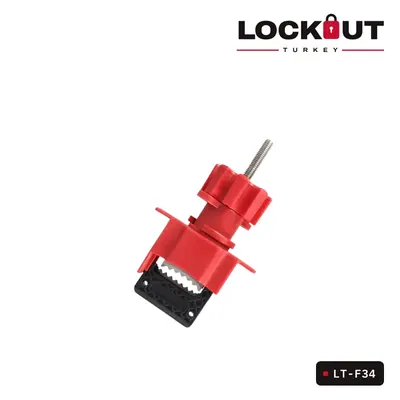
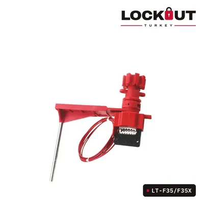
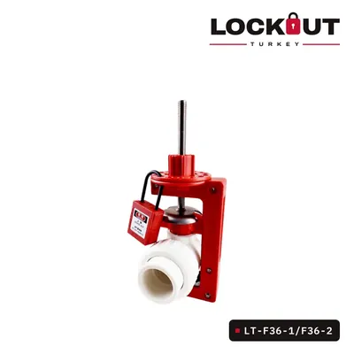
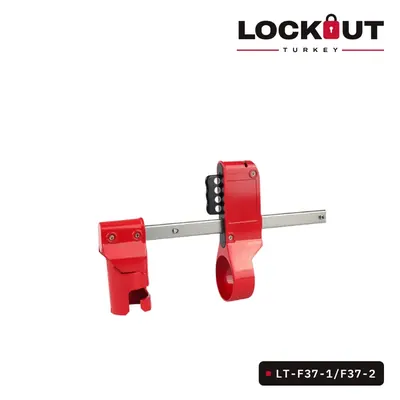
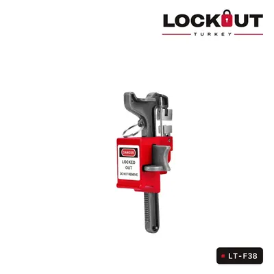
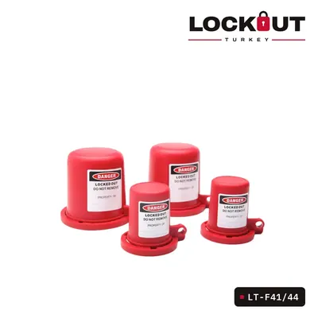
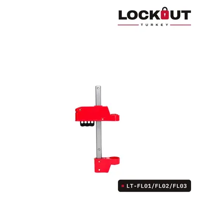
Tesisiniz için toplu teklif mi lazım?
Ürünleri teklif sepetine ekleyin ya da ihtiyacınızı WhatsApp’tan yazın; size özel teklifle dönelim.